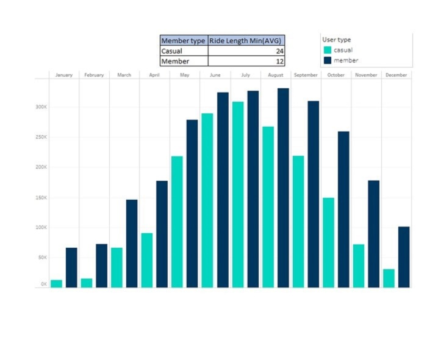

Insights for bike rides in Chicago
Project created to define and analyze bike usage differences between members and casual riders to develop a better targeted marketing campaign to convert casual riders to annual members.
Data was provided and licensed by Divvy, data available contains all 2022 monthly trips from all Cyclistic users, data such as end/start station, time and date, membership type, ride duration, bike type, etc, and is reliable, accurate, well organized, accessible, filtered and ready to be manipulated.
All data was analyzed to uncover trends and patterns that would help note the differences in the service use between casual and annual members, trends that were highlighted in the visualizations and some of them, like the differences found in the trips lengths were highlighted in the final presentation.
All supporting visualizations and key findings can be found in the presentation for stakeholders.
Key findigs
Rides by month
Key findings:
- Average ride length for casuals (people using the daily pass) is 2 times longer than members (people using the anual membership) ride length.
Rides by day of week
Key findings:
- Casual riders use Cyclistic the most on weekends.
- Annual members use Cyclistic the most on weekdays.
Rides by hour of the day
Key findings:
- Both users Cyclistic usage peaks at 5 PM, however, annual members usage also has a smaller peak at 8 AM.
- This might tell annual members use Cyclistic to commute to work more than casual users (further analysis required).
Start stations popularity
Key findings:
- Casual users start more trips at the coastal zone.
- Annual members start more trips downtown and at city outskirts.
- This might reinforce that casual users use Cyclistic more for leisure and annual members use it more to commute to work.
Other key findings
Key findings:
- Only casual users used docked bikes in 2022.
- Casual users are more likely to take longer rides than annual members.
- Most used stations.
Next Steps
Recommendations based on the insights found to better target the ad campaign:
- Further research on how is Cyclistic used by its users: surveys on what they use Cyclistic for
- Target ad campaigns on the coastal zones: target physical ads on this areas to get more exposure to casual members
- Make Cyclistic memberships more attractive to new members: modifying free ride limit, cheaper all day passes if you are an annual member